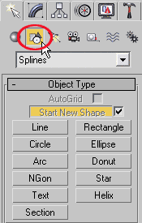
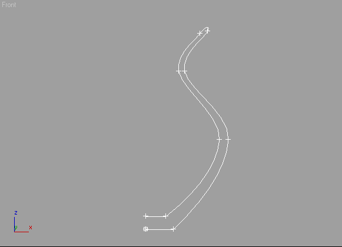

Щёлкнув по кнопке с названием нужной плоской фигуры, например Circle (Окружность), вы включите режим построения. В любом видовом окне нажмите левую кнопку мыши и, удерживая нажатой, растяните фигуру. Щелчком правой кнопкой мыши выключитесь из режима построения. Подобным образом строится большинство плоских фигур.Сплайны:
LINE - линия
CIRCLE - окружность
ARC - дуга
NGON - многоугольник, можно настроить количество углов
TEXT - текст
SECTION - создаёт срез любого имеющегося трёхмерного объекта
RECTANGLE - прямоугольник, можно настроить скругление углов
ELIPSE - эллипс
DONUT - кольцо, две окружности из одного центра
STAR - звезда, можно настроить количество и скругление лучей
HELIX - спираль
Чтобы изменить тип опорной отчки нужно зайти на вкладку Modify и включить уровень подобъектов Vertex. Подобъектами называются составляющие объекта (вершины, сегменты, сплайны).
Когда уровень подобъёктов включен (в стеке он выделяется желтым цветом), можно выделить любую точку на сплайне, щёлкнуть по ней правой кнопкой мыши и из контекстного меню выбрать нужный тип точки.
При этом необходимо выполнить два условия:
1) крайние точки сплайна должны быть типа Corner
2) крайние точки должны иметь одинаковую координату Х в проекции Front
1. На виде Front создайте сплайн. Проверьте крайние точки на выполнение двух условий.
2. Примените модификатор Lathe. Сплайн завращается относительно своей середины.
3. Чтобы придать нормальный вид объекту выровняйте сплайн по минимуму, щёлкнув по кнопке Min в разделе Align свитка Parameters модификатора Lathe.
4. Получится тело вращения.
5. Для гладкости нужно добавить сегментов: в счётчик Segments введите число 30.
6. Очень важно проверять опции Weld Core (спаять на полюсах) и Flip Normals (развернуть нормали), от них зависит, насколько красиво будет выглядеть объект. Необходимость установки FLIP NORMALS можно понять, повертев объект в окне «перспектива». Если у объекта нет лицевой поверхности, а вместо неё видна внутренняя поверхность, то флажок необходимо поставить.